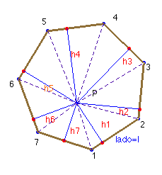

Problema nº 83.- Se tiene un polígono regular de n lados. Hallar la suma de las perpendiculares desde un punto interior cualquiera a todos los lados del polígono.
Solución del profesor Saturnino Campo Ruiz, profesor de Matemáticas del I.E.S. Fray Luis de León (Salamanca) (17 de marzo de 2003)

Desde el punto interior P se divide el polígono en n triángulos. Si se toma como base en cada uno el lado l del polígono, cada segmento perpendicular es la altura sobre ese lado; como el área total del polígono es la suma de las áreas de estos triángulos, y ésta es igual al semiperímetro por la apotema resulta que:Área total = n ·lado/2·apotema= lado/2 ·(h1 + h2 + ... +hn).
Despejando h1 + h2 + ... +hn = n · apotema.
Así pues la suma de esos segmentos es igual a n veces la longitud de la apotema.